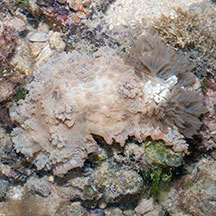
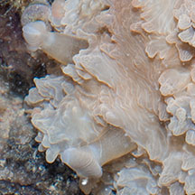
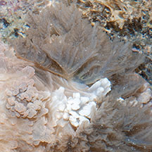
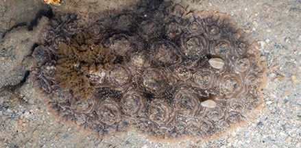
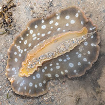
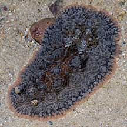
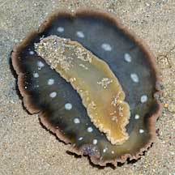
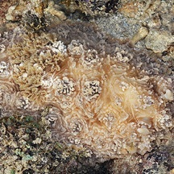
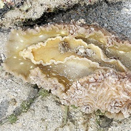

|
|
| nudibranchs text index | photo index |
| Phylum Mollusca > Class Gastropoda > sea slugs > Order Nudibranchia |
| Cauliflower
nudibranch Dendrodoris tuberculosa Family Dendrodorididae updated May 2020 Where seen? This very large nudibranch with whorls of bumps on the upper side and a spotted underside is sometimes seen on some of our Southern shores, near reefs and seagrasses. It may be seasonal: when seen, often many individuals are spotted during the same trip. Features: 12-15cm long. The upperside with lots of conical bumps arranged in clusters so that that resembles a cauliflower. Colours from dark greyish blue, pinkish purple to pale pink. The underside is distinctive with large pale round spots on a plain smooth background, usually darker. Large rhinophores and large feathery gills. |
|
 Pulau Hantu, May 13 |
 Rhinophore and rosette pattern. |
 Feathery gills. |
 Pulau Semakau, Jul 15 |
 Spotted underside. |
 Cyrene Reef, Jul 08 |
 Spotted underside. |
| Cauliflower nudibranchs on Singapore shores |
On wildsingapore
flickr
|
| Other sightings on Singapore shores |
 Beting Bemban Besar, May 11  Photo shared by James Koh on his blog. |
| Filmed on Jul
08 at Cyrene Reefs Nudibranch ~ up very close and very personal @ Cyrene Reef, Singapore from SgBeachBum on Vimeo. |
Links
References
|